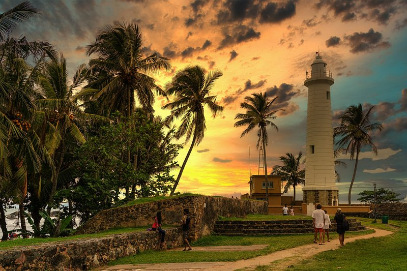

_Wonder of GALLE_
Galle Fortress
Every traveler's pictures and words tell the tale of the UNESCO World Heritage Site Galle Dutch Fort. The fort was initially constructed by the Portuguese during their conquests in the 16th century, and after being fortified and taken over by the Dutch in the 17th century, it eventually fell to the power of the British. Almost 200 years ago, the old town of Galle used as a port for trading spices and other things. Now, however, the fort has been turned into a location rich in history, romance, and beauty where visitors are cordially invited to plunge headfirst into the exotic tales and take part in this heritage site.
Inside the fort, Fifty Lighthouse Street is the ideal starting point from which to see all that Galle has to offer. Go along the ramparts and take in the imposing buildings like the Galle Lighthouse, Galle Clocktower, and the Groote Kerk, all of which have been preserved in their former splendor. Only a native from within the fort would know the details of a Galle Fort Walking Tour with us. Our walking tour takes you into the backstreets of this famous fort, where you'll see adorable buildings, museums, historic sites, and more while learning all kinds of fascinating facts about the Galle Dutch Fort.
Thalpe beach
In the city of Galle, in the southern region of Sri Lanka, is a beach called Thalpe Beach. Both residents and visitors from other countries like visiting there. The region around Thalpe is filled with lively stores, restaurants, and activities relating to water sports.
The small village of Thalpe is tucked away from the bustle of the larger cities along the southern coastal strip. Together with Thalpe Beach, which is a very tranquil and pristine beach, Thalpe Town is full of history, adventure, culture, and gastronomy. This seaside village frequently sees stilt fisherman, which is a fascinating way to learn more about their way of life.
The villagers claim that some 50 years ago, coral was cut out of the rock pools, which were then used to soak coconut husks to extract the coconut coir. Early in the morning from March to April is the ideal time to visit the rock pool beach. Sand is sometimes added to the pools.
Mirissa Coconut Hill

The Coconut Tree Hill is a must-see while visiting Mirissa because it can be found on practically every traveler's Instagram page. The Coconut Tree Hill is a private coconut farm with a nearby temple located on a high rock with views of the pristine stretch of golden beach and the sparkling waves of the Indian Ocean. The hill, which is nearby the town, is free to access at any time of day or night.
After a quick, thrilling climb through a coconut farm from the hill's base to its summit, you are rewarded with the most breathtaking view of Mirissa and its golden shoreline, which will leave you in amazement. You should include The Coconut Tree Hill to your list of must-see attractions in Sri Lanka since it's the ideal spot to take in an eye-catching island sunset. The dome-shaped hill is a beautiful backdrop for your travel photographs with its symmetrical, towering coconut palms against a clear blue sky. While this renowned sight seldom goes a day without receiving visitors, sunset chasers should go to the hill as soon as possible to ensure the finest viewing location!